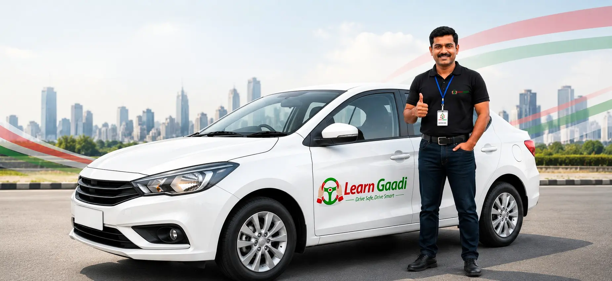

Auto Driving School in Mysore
Three-wheeler control, tight turns and passenger-ready driving for those who want to run an auto.
- Three-wheeler handling
- Narrow-lane practice
Learn Gaadi is a driving school in Mysore built for first-time learners, returning drivers and anyone aiming for a career behind the wheel. Train on a car, bike, scooty, auto, bus or heavy vehicle with patient instructors, and get your Mysore RTO paperwork handled alongside the lessons.

Learn Gaadi · Mysore>>> ABOUT OUR MYSORE TRAINING <<<
Mysore is calmer than a metro, but its roads still test a new driver: the busy circles around the Palace, crowded market streets, the Ring Road, and the climb up Chamundi Hill. A good driving school in Mysore trains you for all of it, not just for the ten minutes of the RTO test.
Learn Gaadi works as a full driving institute in Mysore. You start in a quiet lane to learn the controls, move on to city traffic, and finish with the kind of practice that makes your driving training in Mysore useful long after the licence arrives in the post.
Whether you are comparing driving schools in Mysore for yourself, a parent or a teenager, the approach is the same: one instructor who knows your pace, a clear lesson plan, and no pressure to rush.
>>> CAR TRAINING <<<
Our car driving classes in Mysore are planned around where you are today, not around a fixed syllabus. Pick manual or automatic, and we build the lessons from there.
Seat, mirrors, clutch, steering and gears, then slow practice in quiet lanes. You learn car driving in Mysore without anyone hurrying you.
Fix a shaky reverse, learn proper parking, rebuild confidence after a long break, or get ready for highway and night driving.
Every session runs in a dual-control car, so your instructor can step in whenever needed. If you are looking for a car driving school in Mysore with structured car driving training in Mysore and flexible timings, this is the course. Book driving lessons in Mysore early in the morning, after work or at the weekend.
Book Car Lessons>>> TWO-WHEELER TRAINING <<<
Two wheels are how most of Mysore gets around, which makes balance and road sense the first things to get right. Our bike driving school in Mysore teaches balance, braking, clutch control, turns and lane discipline before you ever join main-road traffic.
As a two wheeler driving school in Mysore, we welcome students, homemakers and working professionals. If you want scooty training in Mysore, you can start from zero. Our bike riding classes in Mysore run in short, regular sessions so you build muscle memory quickly.
Enquire for Bike Training>>> PROFESSIONAL DRIVING <<<
With tourism, transport and logistics all active around Mysore, commercial driving is a steady career. We prepare you for it with vehicle-specific practice, not just a general lesson.
Three-wheeler control, tight turns and passenger-ready driving for those who want to run an auto.
Light motor vehicle training for cars, jeeps and light commercial use, from the basics to confident driving.
Bus driving training in Mysore covering size, turning radius, blind spots, braking distance and passenger safety.
An HMV driving school in Mysore pathway for trucks and heavy goods vehicles, with load and gear awareness.
>>> WOMEN LEARNERS <<<
Many women put off learning because of the fear of being judged, or because they do not know who will be sitting next to them. Our driving school in Mysore for ladies is built to remove both worries. You can request a lady instructor, learn at your own speed and take your time.
>>> COURSES & PRICING <<<
Fees depend on the vehicle, the number of sessions and whether you want licence help included. We share the exact amount on a call so there are no surprises. Ask any of the best driving schools in Mysore for a written quote, and compare what is actually covered.
| Course | Best for | What you get | Fee |
|---|---|---|---|
| Car, with licence | First-time drivers who want one complete package | Lessons, learning licence help and RTO test support | Call for quote |
| Car, training only | Those who already hold a licence or handle RTO work themselves | Driving lessons only, flexible schedule | Call for quote |
| Bike / scooty | Students, homemakers and daily commuters | Balance, braking and road practice | Call for quote |
| Auto, bus & HMV | Drivers heading for professional work | Vehicle-specific training and licence guidance | Call for quote |
Cars, bikes and heavy vehicles each need different time and equipment.
A nervous beginner needs more hours than someone brushing up.
Paperwork and test support are priced separately from training-only.
Searching for a driving school near me in Mysore? Message us your area and we will tell you which pickup and practice slots are open.
>>> LICENCE SUPPORT <<<
Choosing a Mysore RTO driving school means you are not left alone with forms, slot bookings and test-day nerves. We guide you through getting a driving licence in Mysore and prepare you for the exact kind of test you will face.
You can also use us as a driving licence agent in Mysore for guidance on documents and appointments. Always keep your own originals ready and apply only through official channels.
Get Licence HelpWe help you prepare for the learner's test, check your documents and book the slot, so your learning licence in Mysore goes through smoothly.
You train with us through the learner period, building the skills the examiner looks for: control, observation, signalling and parking.
Before the day, you rehearse the test manoeuvres. For your driving test at Mysore RTO, we explain what to carry and what to expect.
After you pass, we guide you through the remaining steps until your permanent licence is issued.
Need driving licence renewal in Mysore? We can explain the documents and process so you renew before it lapses.
>>> WHERE WE TRAIN <<<
Tell us your locality when you enquire and we will plan pickup and practice routes around it. Learners usually join us from these parts of the city.
Message us on WhatsApp with the vehicle you want to learn and your locality. We will reply with timings and the next steps.
>>> FAQ <<<
You can train on a car (manual or automatic), bike, scooter or scooty, auto, bus and heavy vehicles. Tell us which one you want and we will plan the course.
Yes. Women learners can ask for a lady instructor when they book. Please mention it in your enquiry so we can arrange it.
The fee depends on the vehicle, the number of sessions and whether licence assistance is included. Call or WhatsApp us and we will share the exact amount for your course.
Yes. Our licence packages cover guidance on the learning licence, test preparation and support up to your driving test. Government fees are paid separately.
Absolutely. Most of our learners have never touched a steering wheel or handlebar. We start from the very basics and move at your pace.